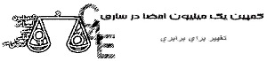
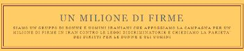

|
|
راه اندازی سایت های کمپین دراین سوی آب و آن سوی آب: ساری و ایتالیا
پنج شنبه28 آذر 1387
تغییر برای برابری - سایت های کمپین ساری و ایتالیا نیزبه جمع سایت های کمپین درایران وخارج ایران پیوستند.بر برابری خواهان مبارک باد.

در سایت کمپین ساری که اخیرا راه اندازی شده است می خوانیم :« دو سال پیش کمپین یک میلیون امضا راه اندازی شد و فعالیت خود را در تهران آغاز کرد ،به تدریج این فعالیت به شهرهای دیگر نبز راه یافت و گسترش پیدا کرد.و حتی به خارج از ایران هم کشیده شد و افراد زیادی از مناطق مختلف به حمایت از آن پرداختند.اما اکثر این فعالیت ها در شهر های بزرگ انجام میشد.در حالی که نیاز این نوع فعالیت و فرهنگ سازی در شهر های کوچک تر که زنان آن از امکانات و آزادی کمتر برخوردارند بسیار بیشتر است.همین مساله ما را به این فکر انداخت که این فعالیت را در شهرمان آغاز کنیم.از آنجایی که برای فرهنگ سازی و ایجاد تغییر برای برابری ،همکاری همه ما لازم است.در این راستا وبلاگی تاسیس کردیم تا افراد علاقه مند بتوانند با هم ارتباط برقرار کرده و با تبادل تجربیات خود به پیشرفت سریع تر جریان فرهنگ سازی کمک کنند و همچنین با ارتباط برقرار کردن با زنانی از اقشار مختلف جامعه خود مشکلات آن ها را منعکس کرده برای رفع این مشکلات تلاش کنند.»
سایت کمپین ساری را در نشانی زیر ببینید:
http://www.sari4equality.blogfa.com/

به گزارش مدرسه فمینستی سایت کمپین ایتالیا نیز به مناسبت سالگرد حقوق بشر و نیز برگزاری مراسم اهدای اولین جایزه بین المللی حقوق بشر ایتالیا به نسرین ستوده، در 12 دسامبر راه اندازی شده است. از فعالیت های کمپین ایتالیا، می توان به معرفی کمپین یک میلیون امضاء در برنامه ای با عنوان «برابری و جنبش زنان ایران» که در ایتالیا در نوامبر 2008 برگزار شده بود اشاره کرد.مطالب این سایت به زبان آلمانی منتشر می شود.
سایت کمپین ایتالیا را در آدرس زیر ببینید: